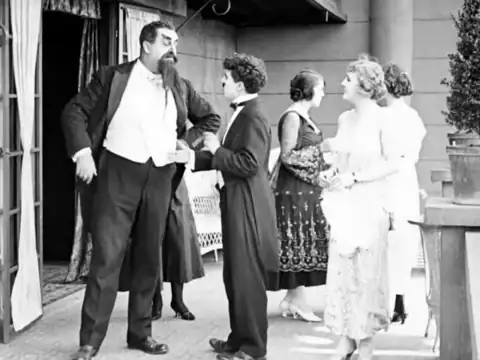
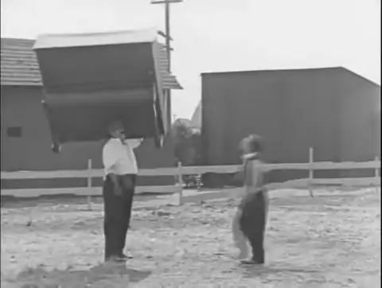
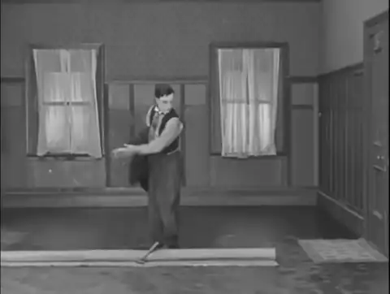
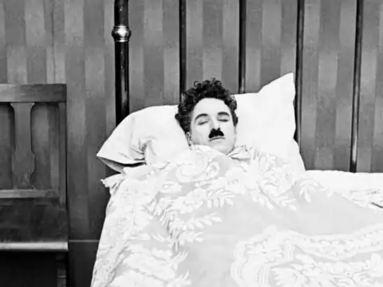
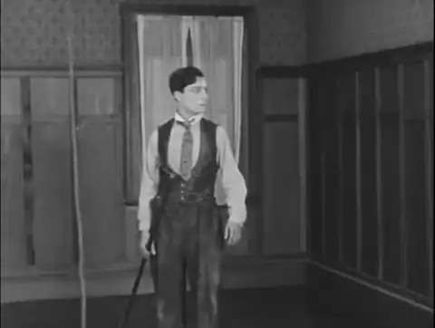
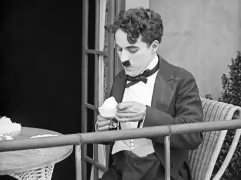
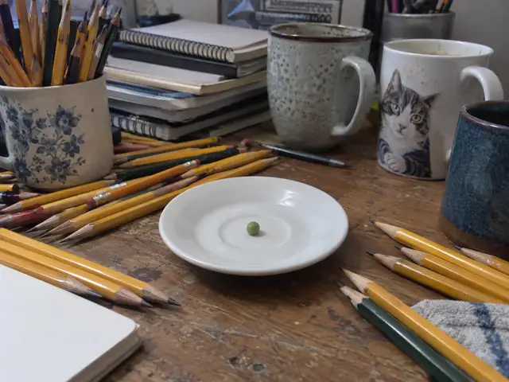
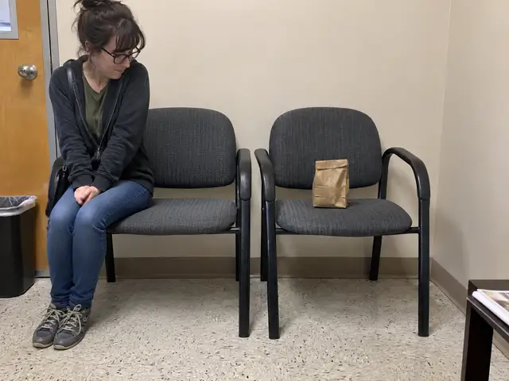
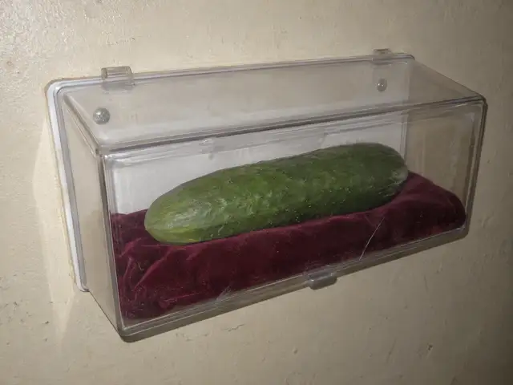
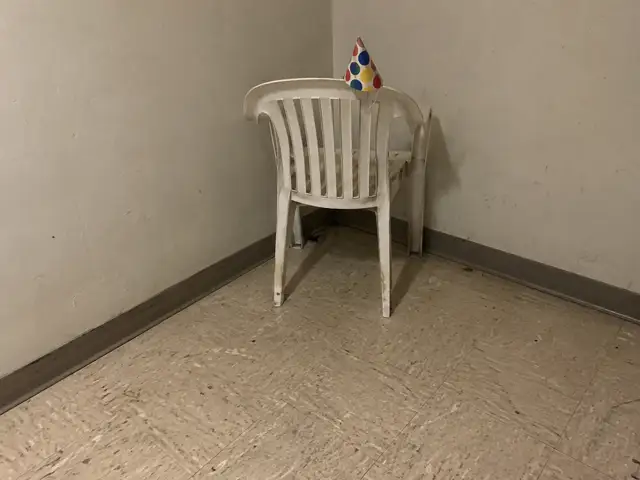

01GIF LOOP · Archival footage
Show / hide animation

We know each other, right?
480 × 360 · 1046 KB · 6.7s
Download GIF · Download WebP
Possible interpretations
Misread etiquette; negotiating politeness; a stalled introduction.
Editorial hypotheses. Your interpretation can differ.
02GIF LOOP · Archival footage
Show / hide animation

I have got it.
480 × 362 · 463 KB · 7.0s
Download GIF · Download WebP
Possible interpretations
A favor that escalates; taking on too much; failed teamwork.
Editorial hypotheses. Your interpretation can differ.
03GIF LOOP · Archival footage
Show / hide animation

The floor wins.
480 × 362 · 250 KB · 9.0s
Download GIF · Download WebP
Possible interpretations
Losing control; an ordinary task goes wrong; an unexpected obstacle.
Editorial hypotheses. Your interpretation can differ.
04GIF LOOP · Archival footage
Show / hide animation

Five more minutes.
480 × 360 · 765 KB · 7.0s
Download GIF · Download WebP
Possible interpretations
Delayed realization; waking reluctantly; sudden urgency.
Editorial hypotheses. Your interpretation can differ.
05GIF LOOP · Archival footage
Show / hide animation

Fresh air, bad idea.
480 × 362 · 208 KB · 6.2s
Download GIF · Download WebP
Possible interpretations
Second thoughts; retreat; an unexplained reaction.
Editorial hypotheses. Your interpretation can differ.
06GIF LOOP · Archival footage
Show / hide animation

Act natural.
480 × 360 · 747 KB · 8.0s
Download GIF · Download WebP
Possible interpretations
Copying etiquette; wanting to fit in; uncertainty about the rules.
Editorial hypotheses. Your interpretation can differ.
07STILL IMAGE · Generated fictional photo
Show / hide image

Fully prepared for nothing
640 × 480 · 28 KB
Download WebP
Possible interpretations
Preparation: equipment overwhelms the task. Procrastination: arranging tools replaces doing something. Scarcity: abundant supplies surround almost no food.
Editorial hypotheses. Your interpretation can differ.
08STILL IMAGE · Generated fictional photo
Show / hide image

Reserved for the bag
640 × 480 · 22 KB
Download WebP
Possible interpretations
Priorities: the bag receives more space. Courtesy: an object is treated like a guest. Discomfort: someone restricts herself despite available room.
Editorial hypotheses. Your interpretation can differ.
09STILL IMAGE · Generated fictional photo
Show / hide image

Emergency cucumber
640 × 480 · 13 KB
Download WebP
Possible interpretations
Importance: an ordinary object gets precious treatment. Preparedness: something is stored for future use. Protection: preservation seems excessive.
Editorial hypotheses. Your interpretation can differ.
10STILL IMAGE · Generated fictional photo
Show / hide image

Chair in timeout
640 × 480 · 15 KB
Download WebP
Possible interpretations
Punishment: the chair appears sent to the corner. Exclusion: celebration without company. Aftermath: a party object remains after everyone has gone.
Editorial hypotheses. Your interpretation can differ.